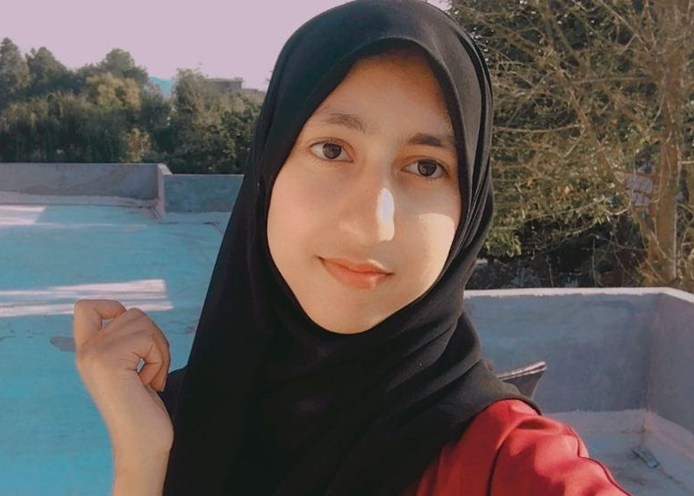

Muhammad Ghuzaif Arif
ML Engineer
Trains and tunes the PSL gesture classifier on top of MediaPipe hand landmarks.
Real-time PSL → Urdu Speech
Turning Pakistan Sign Language into spoken Urdu — instantly — so deaf and mute voices are finally heard.
Live Demo
Start the camera, sign in front of it, and watch Gesto AI recognize your gesture in real time.
Server disconnected
Recognized Gesture
—
Waiting for camera…
Recent Gestures
The Problem
Pakistan has one of the largest deaf populations in the world, yet sign-language interpreters are scarce and most hearing people cannot understand PSL. Everyday moments — a doctor's visit, a market purchase, an emergency — become walls of silence.
Gesto AI bridges that gap: a camera watches the signer's hands, an AI model reads the gesture, and the app speaks it aloud in Urdu — in real time, on ordinary devices, with no special hardware.
Captures the signer's hand gestures through any phone or laptop webcam.
MediaPipe tracks the hand while a TensorFlow classifier names the PSL gesture.
The recognized gesture is spoken aloud in Urdu, closing the conversation gap.
The Team
ML Engineer
Trains and tunes the PSL gesture classifier on top of MediaPipe hand landmarks.
Backend Engineer
Builds the FastAPI inference server and the real-time WebSocket prediction pipeline.

Frontend & UX
Crafts the accessible, judge-friendly interface and the Urdu voice experience.
Tech Stack